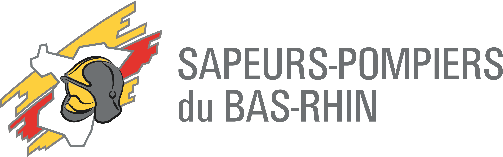

SIS 67 — Service d'Incendie et de Secours du Bas-Rhin
Mon rôle au sein de la DSI
Intégré au SIS 67 pendant deux stages successifs, j'ai aidé à administrer et sécuriser les infrastructures réseaux et systèmes d'un organisme de secours où chaque interruption de service peut avoir des conséquences opérationnelles directes.

DSI • Infrastructures critiques